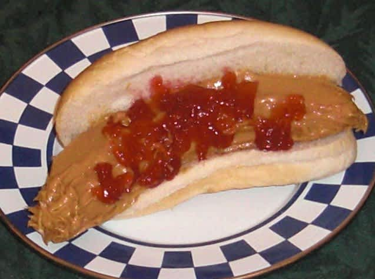

Fake Hot Dog Recipe!

Hot Dog!
Ingredients
- 1 banana
- ⅓ cup creamy peanut butter, to taste
- 1 hot dog bun
- 1-2 tablespoon strawberry preserves, to taste
- kiwi, chopped & peeled for relish (optional)
Steps
- Peel banana.
- Spread peanut butter evenly on banana to give it a "hot dog-like" appearance.
- Place in a hot dog bun.
- Drizzle with strawberry preserves (ketchup) and chopped kiwi (relish), if desired.